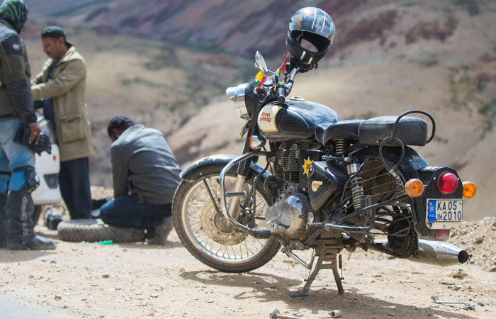

Motorcycle Won't Start
We investigate common causes of a motorcycle that will not start, including electrical, fuel and starting-system problems.
Motorcycle breakdowns can happen anywhere. Get professional roadside assistance to diagnose the problem, carry out minor repairs where possible, or help get your bike to a safe place.

A motorcycle that suddenly refuses to start or develops a problem while you're working can leave you stranded and unable to continue your journey.
Our roadside assistance service is designed to help diagnose common motorcycle breakdowns and get you moving again where a safe roadside repair is possible.
If the problem cannot be safely repaired at the roadside, we can help arrange recovery or transportation to a suitable repair location.
Request roadside assistanceWe can assess a range of common motorcycle problems at your location and determine whether the bike can be repaired roadside or needs further recovery.
We investigate common causes of a motorcycle that will not start, including electrical, fuel and starting-system problems.
Battery condition, connections, charging and other basic electrical problems can be checked to identify why your motorcycle has lost power.
We can help investigate fuel-related breakdowns such as fuel delivery problems, blocked lines or running out of fuel.
If you experience a puncture or tyre problem while on the road, we can assist with the immediate roadside situation and determine the safest way to continue.
A loose, damaged or displaced chain can leave a motorcycle immobilised. We inspect the situation and advise on the safest repair or recovery option.
Where practical and safe, minor mechanical problems may be repaired at the roadside so you can continue your journey.
A motorcycle that suddenly stops working does not always require a major repair. The problem could be something as simple as a loose electrical connection, fuel delivery issue, battery problem or control cable failure.
Our first step is to assess the symptoms and inspect the motorcycle before deciding what should happen next.

These are some of the situations where roadside assistance can help you determine what to do next.
The engine turns over but does not start, or the motorcycle has no response when you try to start it.
Lights, ignition, starter or other electrical systems stop working while you're on the road.
You have run out of fuel and cannot safely reach the next filling station.
A loose, displaced or damaged chain prevents the motorcycle from being ridden safely.
A puncture or damaged tyre leaves you unable to continue your journey safely.
If the motorcycle begins overheating or develops another serious warning sign, stop riding and have it assessed.
A breakdown is more than an inconvenience when your motorcycle is part of your daily work. Getting back on the road quickly can help reduce unnecessary downtime.
Assistance for motorcycles used for food delivery, courier work and other daily delivery operations.
Get help when your everyday motorcycle develops a problem during your commute or journey.
Early diagnosis can help determine whether the motorcycle can be repaired on-site or needs further attention.
If a motorcycle cannot be safely ridden, we recommend recovery rather than encouraging you to continue riding.
When you request roadside assistance, giving us accurate information about your location and the problem helps us understand what type of assistance may be required.
If the motorcycle can be safely repaired at the roadside, we will work toward getting you moving again. If not, the safest option may be recovery to a workshop or another suitable location.

Tell us where you are and provide the best available information about your location.
We ask about the symptoms and what happened before the motorcycle stopped or developed the problem.
Where safe and practical, we diagnose and carry out minor roadside repairs.
If the motorcycle cannot safely continue, we help arrange the appropriate recovery or transportation option.
Some motorcycle problems should never be ignored just to complete a journey. If your brakes, steering, wheels, suspension or other safety-critical components have failed, stop riding and request assistance.
If possible, move away from moving traffic and position yourself and the motorcycle in the safest practical place.
Do not continue riding if there is a serious brake, steering, wheel or suspension problem.
Give us your location, motorcycle details and a clear description of what happened.
From starting problems and electrical faults to fuel, chain and tyre emergencies, we'll assess the situation and help you find the safest solution.
Don't risk riding an unsafe motorcycle or standing stranded beside the road. Request assistance and let us help you work out the safest next step.